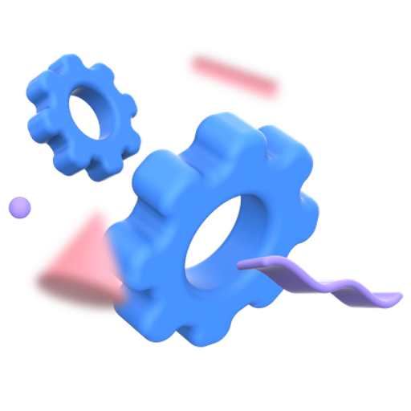

Hoe start je een bedrijfop minderjarige leeftijd?

Aanleiding
Het starten van een bedrijf als jongere is iets wat nog niet veel gebeurd. De reden hiervoor is
dat veel mensen bang zijn voor het harde werk wat het nodig heeft of de risico’s die je gaat
ervaren. Ik (Bram, maker van de Website voor dit project) heb sinds kort een eigen bedrijf en
merk dat mensen het starten van een bedrijf erg overschatten.
Tuurlijk kost het maken van een bedrijf veel werk, tijd en inzet, maar het voordeel van een eigen bedrijf is dat jij zelf kan bepalen hoeveel jij wilt werken en wilt doen, en hoeveel succes je wilt bereiken, je bent dus afhankelijk van jezelf, daarna pas de rest.
Tuurlijk kost het maken van een bedrijf veel werk, tijd en inzet, maar het voordeel van een eigen bedrijf is dat jij zelf kan bepalen hoeveel jij wilt werken en wilt doen, en hoeveel succes je wilt bereiken, je bent dus afhankelijk van jezelf, daarna pas de rest.
Eigen baas
Wat zonet al even kort benoemd werd was het zijn van eigen baas. Als je een eigen bedrijf hebt
ben je dus eigen baas, je bepaald dus dingen zelf. Hierbij moet je denken aan eigen werktijden
bedenken, je eigen prijzen, je eigen stijl kunnen hanteren, bepalen wanneer je vakantie hebt en
ga zo maar door.
Maar, als eigen bedrijf heb je ook zo je vaste lasten en primaire taken. Denk hierbij aan het betalen van verzekeringen en belasting, of het moeten bijhouden van administratie. Gelukkig is hierbij genoeg hulp beschikbaar.
Maar, als eigen bedrijf heb je ook zo je vaste lasten en primaire taken. Denk hierbij aan het betalen van verzekeringen en belasting, of het moeten bijhouden van administratie. Gelukkig is hierbij genoeg hulp beschikbaar.
Makkelijker dan je denkt
Genoeg hulp is dus beschikbaar zoals hierboven benoemt werd, daarom gaan er veel lasten van je
schouders af. Denk hierbij aan een boekhouder, een coach voor ondernemerschap, sponsoren en etc.
Er zijn dus genoeg plekken om terecht te kunnen voor zowel advies en als opleidings gerichte doeleinden. Alles is dus mogelijk zolang je de inzet maar toont.
Er zijn dus genoeg plekken om terecht te kunnen voor zowel advies en als opleidings gerichte doeleinden. Alles is dus mogelijk zolang je de inzet maar toont.
Veel hulp
Het krijgen van veel hulp is dus mogelijk. Je kan op veel plekken tegenwoordig een
opleiding/cursus volgen om het ondernemerschap onder controle te krijgen en succesvol te worden.
Ook kun je online ook veel artikelen en video’s vinden met de beste trucks. Denk hieraan aan het maken van een goed overzichtstabel voor de administratie of een goede planning voor je to do listen. Voor eigenlijk elke vraag is wel een antwoord beschikbaar.
Ook kun je online ook veel artikelen en video’s vinden met de beste trucks. Denk hieraan aan het maken van een goed overzichtstabel voor de administratie of een goede planning voor je to do listen. Voor eigenlijk elke vraag is wel een antwoord beschikbaar.

Mening van jongeren
Het starten van een bedrijf onder de jongeren word steeds populairder, toch gebeurd het nog niet
super veel, de reden hiervoor is dat jongeren het niet durven en bang zijn voor de risico’s.
Ze zijn bijvoorbeeld bang dat het te veel werk, tijd en geld gaat kosten, ondanks dat dit compleet in je eigen handen ligt. Ook zijn ze bang voor het niet hebben van zekerheden binnen hun werk gebied.
Ze zijn bijvoorbeeld bang dat het te veel werk, tijd en geld gaat kosten, ondanks dat dit compleet in je eigen handen ligt. Ook zijn ze bang voor het niet hebben van zekerheden binnen hun werk gebied.